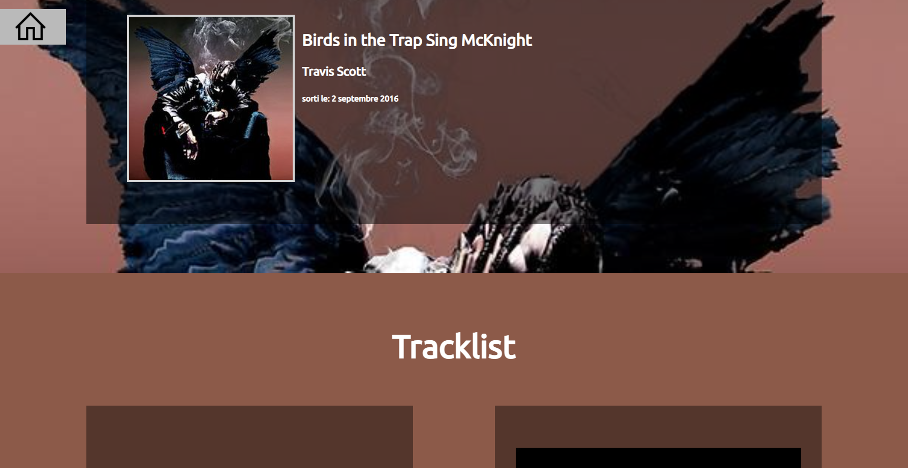
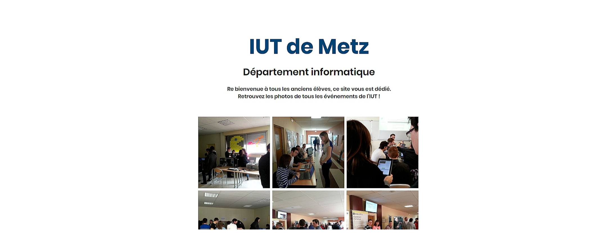
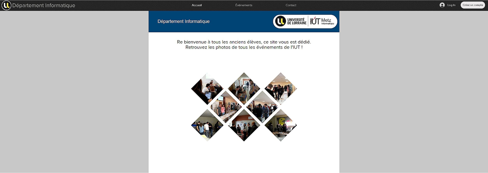

Réalisation, dans un groupe de trois personnes, d'un petit jeu en C, sans interface graphique sur une durée de six semaines.
Ce jeu reprend les règles du jeu de Nim mais avec des pions à la place des allumettes.
Le joueur doit déplacer son pion d'une ou deux case vers la droite ou vers le bas et arriver sur la case d'arrivée en évitant les pièges
La compétence visée par ce projet est la maîtrise des concepts de l'algorithmique et de la programmation
pas d'images disponibles
Développement, avec une équipe de trois personnes, d'un site web, en HTML5 et CSS3, au sujet d'une décénnie.
Nous avions choisi de présenter la décénnie 2010 - 2020 en traitant de la musique, du sport, des jeux vidéos ou encore des mangas.
Grâce à ce projet je suis maintenant apte à synthétiser une information écrite et sa présentation orale.
Mais j'ai aussi maîtriser ma recherche de documents ainsi que mon aptitude à la synthèse des compétences techniques acquises.
Image du site web
Au cours de ce projet de 6 personnes, nous avons appris la conduite de projet et développé un site web en HTML5 et CSS3 de manière plus structuré que le premier que nous avions réalisé.
Ce projet à été l'occasion de mettre en pratique la méthodologie de la conduite de projets, mais aussi de développer mes compétences en tant que chef de projet.
Ce travail ma permis d'améliorer mon autonomie ainsi que le travail d'équipe durant les huit semaines consacré à ce projet.
Image du site web
 Pendant 10 semaines nous avons, à deux, développé une application avec interface graphique de gestion d'une vidéothèque.
Nous avons du modéliser le problème avec UML et réaliser l'ensemble du projet en Java
Ce projet nous à permis d'améliorer nos compétences en UML ainsi qu'en Java.
Mais aussi d'améliorer notre capacité à comprendre un problème et à le résoudre sur un projet plus complexe
lien vers le répertoire Github du projet
Projet Vidéothèque JavaA deux nous avons développé une application de gestion de boutique de pull.
Cette application à été réalisée avec Java, JavaFX, JUnit ainsi que mySQL.
Durant les huit semaines de projets nous avons appris à mener un projet en suivant les méthodes agiles, mais aussi la programmation événementielle, le design pattern DAO, l'architecture MVC, les tests unitaires ou encore le JDBC
lien vers le répertoire Github du projet
Projet CPOACe projet d'une durée de deux semaines, en groupe de deux, nous à permis d'apprendre à développer un site web dynamique en utilisant PHP et CSS3.
Grâçe à ce projet nous avons perfectionné notre manière de travailler en équipe.
lien vers le répertoire Github du projet
Projet site web dynamiqueDurant deux semaines nous avons réalisé une application client / serveur en C pour la gestion de la réservation et annulation des places d'un concert. Grâce à ce projet nous avons beaucoup appris sur le C en général ainsi que sur l'infrastructure client / serveur et le multithreading.
lien vers le répertoire Github du projet
Projet C client / serveur